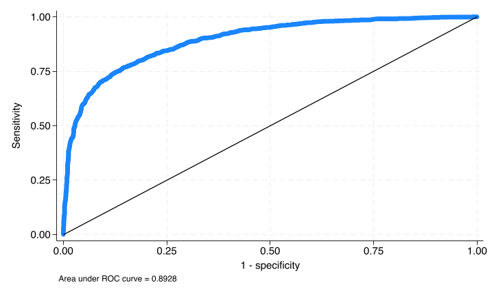
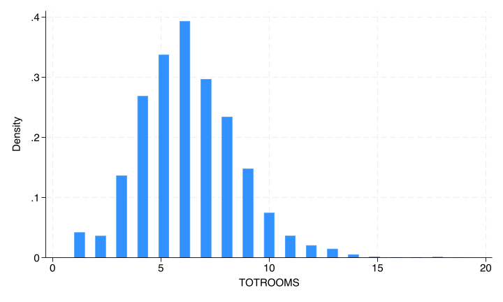
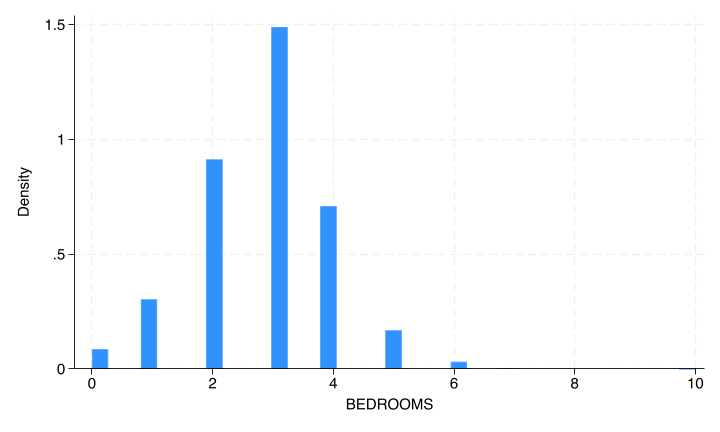

2 Generalized Linear Models
If the outcome variable is not continuous, while OLS will usually be able to be fit, the results may be unexpected or undesired. For example, if the response is a binary indicator, an OLS model fit may predict an individual has a negative response.
We can generalize the model from ordinary least squares to allow a non-linear relationship between the predictors and the outcome, which may fit different outcomes better.
Recall that the equation for OLS is
\[ Y = \beta_0 + \beta_1X_1 + \beta_2X_2 + \cdots + \beta_pX_p + \epsilon \]
We can modify this by allowing the left hand side to be a function of \(Y\),
\[ f(Y) = \beta_0 + \beta_1X_1 + \beta_2X_2 + \cdots + \beta_pX_p + \epsilon \]
Note that this is still linear in \(X\) (the right-hand side). Non-linear regession refers to something such as
\[ Y = \beta_1X_1^{\beta_2X_2} + \epsilon \]
Therefore, even though the function \(f()\) may not be linear, the model is still linear - hence “generalized linear model”.
The function, \(f()\), is called the “link” function. If the link function is the identify function, \(f(x) = x\), the GLM simplifies to ordinary least squares.
We’ll talk about a few link functions and the regression models they define.
2.1 Logistic Regression
Logistic regression is used when the outcome is dichotomous - either a positive outcome (1) or a negative outcome (0). For example, presence or absence of some disease. The link function for logistic regression is logit,
\[ \textrm{logit}(x) = \textrm{log}\Big(\frac{x}{1-x}\Big) \]
\[ \textrm{logit}\left(P(Y = 1 | X)\right) = \beta_0 + \beta_1X_1 + \cdots + \beta_pX_p + \epsilon. \]
Note also that unlike in OLS, the left-hand side is not the observed outcome, but rather the probability of a positive outcome. So the goal of a logistic model is not to predict whether an individual will have a positive outcome, but rather to predict their probability of a positive outcome. This is a subtle difference, but worth pointing out since predicted values will be probabilities, not a binary response.
2.1.1 Fitting the logistic model
We can fit a logistic regression using the logit command in State. It works very similarly to regress. Let’s run a model predicting the presence of a cellar based on square footage, region and electricity expenditure.
. tab cellar
CELLAR | Freq. Percent Cum.
------------+-----------------------------------
-2 | 1,455 25.59 25.59
0 | 2,490 43.79 69.38
1 | 1,741 30.62 100.00
------------+-----------------------------------
Total | 5,686 100.00
. replace cellar = . if cellar == -2
(1,455 real changes made, 1,455 to missing)
. logit cellar dollarel totsqft_en i.regionc female
Iteration 0: Log likelihood = -2866.0585
Iteration 1: Log likelihood = -1748
Iteration 2: Log likelihood = -1730.0798
Iteration 3: Log likelihood = -1729.9962
Iteration 4: Log likelihood = -1729.9962
Logistic regression Number of obs = 4,231
LR chi2(6) = 2272.12
Prob > chi2 = 0.0000
Log likelihood = -1729.9962 Pseudo R2 = 0.3964
------------------------------------------------------------------------------
cellar | Coefficient Std. err. z P>|z| [95% conf. interval]
-------------+----------------------------------------------------------------
dollarel | -.0004174 .0000575 -7.26 0.000 -.0005301 -.0003048
totsqft_en | .0009164 .0000417 21.98 0.000 .0008347 .0009981
|
regionc |
Midwest | -.3488001 .1461488 -2.39 0.017 -.6352464 -.0623538
South | -3.188248 .1435758 -22.21 0.000 -3.469651 -2.906844
West | -3.11719 .1482945 -21.02 0.000 -3.407842 -2.826538
|
female | -.1458111 .0864176 -1.69 0.092 -.3151864 .0235642
_cons | .0504945 .1659137 0.30 0.761 -.2746904 .3756795
------------------------------------------------------------------------------When you try this yourself, you may notice that its not quite as fast as regress. That is because for OLS we have a “closed form solution” - we just do some quick math and reach an answer. However, almost every other type of regression lacks a closed form solution, so instead we solve it iteratively - Stata guesses at the best coefficients that minimize error1, and uses an algorithm to repeatedly improve those coefficients until the reduction in error is below some threshold.
From this output, we get the Number of obs again. Instead of an ANOVA table with a F-statistic to test model significance, there is instead a chi2 (\(\chi^2\), pronounced “ky-squared” as in “Kyle”). In this model, we reject the null that all coefficients are identically 0.
When we move away from linear regression, we no longer get an \(R^2\) measure. There have been various pseudo-\(R^2\)’s suggested, and Stata reports one here, but be careful assigning too much meaning to it. It is not uncommon to get pseudo-\(R^2\) values that are negative or above 1. We’ll discuss measuring goodness of fit below.
The coefficients table is interpreted in almost the same way as with regression. We see that square footage and energy expenditure have significant coefficient (positive and negative respectively), and there appears to be no gender effect. There are differences between regions.
However, we cannot nicely interpret these coefficients, which are known as the “log odds”. All we can say is that “As square footage increases, the probability of a house having a cellar increases.”
To add any interpretability to these coefficients, we should instead look at the odds ratios. These are the exponentiated log odds. We can ask Stata to produce these with the or option.
. logit, or
Logistic regression Number of obs = 4,231
LR chi2(6) = 2272.12
Prob > chi2 = 0.0000
Log likelihood = -1729.9962 Pseudo R2 = 0.3964
------------------------------------------------------------------------------
cellar | Odds ratio Std. err. z P>|z| [95% conf. interval]
-------------+----------------------------------------------------------------
dollarel | .9995826 .0000575 -7.26 0.000 .99947 .9996953
totsqft_en | 1.000917 .0000417 21.98 0.000 1.000835 1.000999
|
regionc |
Midwest | .7055342 .1031129 -2.39 0.017 .5298049 .9395505
South | .0412441 .0059217 -22.21 0.000 .0311279 .0546479
West | .0442814 .0065667 -21.02 0.000 .0331126 .0592175
|
female | .864321 .0746925 -1.69 0.092 .7296529 1.023844
_cons | 1.051791 .1745066 0.30 0.761 .7598073 1.45598
------------------------------------------------------------------------------
Note: _cons estimates baseline odds.Notice that the chi2, Pseudo R2, z and P>|z| do not change - we’re fitting the same model! We’re just changing how the coefficients are represented.
Odds ratios null hypothesis is at 1, not at 0. A value of 1 represents equal odds (or no change in odds). Odds ratios are always positive. So a significant odds ratio will be away from 1, rather than away from 0 as in linear regression or the log odds. The interpretation of odds ratios can be tricky, so let’s be precise here.
For categorical predictors, the interpretation is fairly straightforward. The coefficient on females is 0.8643. This means that for every 1 female respondent who has a basement in their house, you would expect 0.8643 male respondents to have a basement.
For continuous predictors, its the odds as the value of the predictor changes. Consider the coefficient on energy expenditure, 0.999583. For every 1 house of expenditure \(e\) which has a cellar, you’d expect 0.999583 houses at expenditure \(e+1\) to have a cellar.
Those coefficients are really close to 1 due to scaling: a $1 increase or 1-sqft increase is irrelevant. Due to the non-linear relationship between the predictors and the outcome, we cannot simply multiply the odds ratios. Instead, let’s scale the variables and re-fit the model.
. generate dollarel1000 = dollarel/1000
. generate totsqft1000 = totsqft_en/1000
. logit cellar dollarel1000 totsqft1000 i.regionc female, or
Iteration 0: Log likelihood = -2866.0585
Iteration 1: Log likelihood = -1748
Iteration 2: Log likelihood = -1730.0798
Iteration 3: Log likelihood = -1729.9962
Iteration 4: Log likelihood = -1729.9962
Logistic regression Number of obs = 4,231
LR chi2(6) = 2272.12
Prob > chi2 = 0.0000
Log likelihood = -1729.9962 Pseudo R2 = 0.3964
------------------------------------------------------------------------------
cellar | Odds ratio Std. err. z P>|z| [95% conf. interval]
-------------+----------------------------------------------------------------
dollarel1000 | .6587254 .0378633 -7.26 0.000 .5885423 .7372778
totsqft1000 | 2.500286 .1042513 21.98 0.000 2.304083 2.713196
|
regionc |
Midwest | .7055342 .1031129 -2.39 0.017 .5298049 .9395505
South | .0412441 .0059217 -22.21 0.000 .0311279 .0546479
West | .0442814 .0065667 -21.02 0.000 .0331126 .0592175
|
female | .864321 .0746925 -1.69 0.092 .7296529 1.023844
_cons | 1.051791 .1745066 0.30 0.761 .7598073 1.45598
------------------------------------------------------------------------------
Note: _cons estimates baseline odds.Note once again that the model fit characteristics haven’t changed; we’ve fit the same model, just with different units. Now the interpretation are more reasonable. As the expenditure increases by $1000, the odds of having a cellar decrease by 34%.
For every additional 1000-square feet, the odds of having a cellar increases by 150%. In other words, for every two 2000-square foot house that have a cellar, you’d expect five 3000-square foot houses to have cellars.
2.1.2 Categorical Variables and Interactions
Both categorical variables and interactions can be included as they were in linear regression, with the appropriate interpretation of coefficients/odds ratios.
2.1.3 margins and predict
The margins command works mostly the same, though it produces results on the probability scale, not the odds scale.
. margins regionc
Predictive margins Number of obs = 4,231
Model VCE: OIM
Expression: Pr(cellar), predict()
------------------------------------------------------------------------------
| Delta-method
| Margin std. err. z P>|z| [95% conf. interval]
-------------+----------------------------------------------------------------
regionc |
Northeast | .7852513 .0181353 43.30 0.000 .7497068 .8207958
Midwest | .7288181 .0144762 50.35 0.000 .7004453 .7571909
South | .2087012 .0102263 20.41 0.000 .1886581 .2287443
West | .218189 .0113706 19.19 0.000 .195903 .240475
------------------------------------------------------------------------------The predict command adds a new statistic. xb now is the linear predictor, which is often not useful. Instead, the pr statistic returns the estimated probability of a positive outcome.
2.1.4 Logistic regression assumptions
The assumptions for logistic regression are simpler than linear. The outcome measure must be binary with a 0 for a negative response and 1 for a positive. (Technically they don’t have to be positive/negative. We could think of predicting male/female and code male = 0 and female = 1. However, the convention would be to consider the outcome as “The person is female” so a 1 represents a “success” and a 0 a “failure” of that statement.) The errors in a logistic regression model are fairly contained (you can’t be wrong than more than 1!) so there are no real assumptions about them. The independence assumption is still here and still important, again, a mixed logistic model may be appropriate if the data is not independent.
2.1.5 Logistic goodness of fit
As we mentioned earlier, there are various issues with the Pseudo \(R^2\) reported by logit, so use it carefully. In fact, all measures of goodness of fit in non-OLS models are problematic. However, here are two approaches commonly used in logistic regression.
The first is to look at a classification results: If we were to choose a threshold (say .2) and classify positive/negative outcomes against it (If a predicted probability is below .2, classify as 0. If a predicted probability is above .2, classify as 1.). We don’t know what the “correct” threshold is (if you even believe there could be one), but we can test over a range of thresholds and see how well we classify.
. lroc
Logistic model for cellar
Number of observations = 4231
Area under ROC curve = 0.8928
This is called a ROC curve (Receiver Operating Characteristic). Starting with a threshold of 1 (so no houses are predicted to have a cellar) at (0,0) and continuing to a threshold of 0 (all houses are predicted to have a cellar), each point is plotted as sensitivity (percent of correctly predicted positive responses) versus specificity (incorrecly predicted negative responses). With a threshold of 1, every house with a cellar is predicted to not a cellar (so 0% correct) and every house without a cellar is predicted to have a cellar (0% correct). As the threshold increases, these values are computed and plotted. The diagonal \(y=x\) line represents a completely uninformative model, and the ROC curve cannot pass below it. The closer it is to the top left corner, the better predictive the model is. The AUC (area under curve) is another measure of model-fit: .5 would indicate no information (ROC on the diagonal), 1 would indicate perfect fit (ROC to the top left corner). The AUC here is 0.89 indicating some predictive power.
The second is a more formal test. There are two variants, a Pearson \(\chi^2\) test and the Hosmer-Lemeshow test. Both are fit with the estat gof command. Both are testing the hypothesis that the observed positive responses match predicted positive responses in subgroups of the population. Therefore we do not want to reject these tests, and a large p-value is desired.
. estat gof
Goodness-of-fit test after logistic model
Variable: cellar
Number of observations = 4,231
Number of covariate patterns = 4,231
Pearson chi2(4224) = 4070.48
Prob > chi2 = 0.9539We see here a p-value of 0.954, failing to reject the null, so there is no evidence that the model fits poorly.
There is some concern that when the “number of covariate patterns” is close to the number of observations , the Pearson test is invalid. In this data, we see that 4231 is indeed equal to 4231. Instead, we can use the Hosmer-Lemeshow by passing the group(#) option:
. estat gof, group(10)
note: obs collapsed on 10 quantiles of estimated probabilities.
Goodness-of-fit test after logistic model
Variable: cellar
Number of observations = 4,231
Number of groups = 10
Hosmer–Lemeshow chi2(8) = 58.12
Prob > chi2 = 0.0000The p-value gets very significant.
Why did we choose 10 groups? It’s just the standard. The only thing to keep in mind is that the Hosmer-Lemeshow test is only appropriate if the number of groups is greater than the number of predictors (including the intercept). In this model, we had two predictors, so that’s 3 total (including the intercept), so 10 is OK. There is some discussion that this choice can bias results - there are examples out there where passing 9 to the option rejects the test, whereas passing 11 passes.
Overall, as mentioned, take these goodness-of-fit measures with a grain of salt. Focus on interpreting the coefficients.
2.1.6 Separation
Since the logistic regression model is solved iteratively, this can fail for a number of reasons. Before you begin interpreting the model, you’ll want to glance at the iteration steps and make sure that no errors were printed. The most common failure is due to separation.
With a binary outcome instead of a continuous outcome, it is much easier to have a predictor (or set of predictors) that perfectly predict the outcome. Consider trying to predict gender based on height. With a smaller sample, it’s not hard to imagine a scenario where every male is taller than every female. This is called “perfect separation”; using this sample, knowing height gives perfect information about gender
“Partial separation” can also occur; this is when prediction is perfect only for one limit. Take the height scenario again; say everyone above 5’8” is male, and there are two men but the rest women below 5’8”. Here, we will always predict Male for heights above 5’8”.
Separation (of either type) often produces coefficients to be extreme with large standard errors. Stata will sometimes warn about this, but not always. If you notice these exceptional coefficients or if Stata does warn about separation, you’ll need to investigate and consider excluding certain predictors. It may seem counter-intuitive to exclude extremely highly predictive variables, but if a variable produces perfect separation, you don’t need a model to inform you of that.
2.1.7 logit Miscellaneous.
The logit model supports the margins command just like regress does.
It does not support estat vif, but you can re-run the model as with regress as the VIF does not depend on the outcome. E.g.,
logit y a b c
regress y a b c
estat vifCollinearity, overfitting, and model selection remain concerns in the logistic model.
Robust standard errors via vce(robust) are supported.
One other common cause of failed convergence is scaling - try scaling all your variables and see if that improves convergence.
2.1.8 logit vs logistic
Instead of logit, we could run the logistic command. The only difference is that logistic reports the odds ratio by default whereas logit reports the log odds. My personal preference is logit, but there’s no need to use one over the other.
2.1.9 Sample size concerns
When the percent of positive outcomes is close to 50%, the rules we discussed for OLS hold, 10-20 observations per predictor. As the percent of positive outcomes deviates from 50%, you may need a much larger sample size - mostly to ensure a reasonable number of both positive and negative outcomes. For example, if you expect 5% of individuals to have a positive outcome, and have a sample size of 40, that’s only 2 individuals with a positive outcome! Instead you should strive to have at least 10 or ideally over 100 individuals per outcome.
2.1.10 Rare outcomes
If the percent of positive outcomes is extreme (e.g. 99% or 1%), logistic regression may fail to converge. Sometimes Poisson regression which we’ll talk about next can be used in this situation. The estimated coefficients will be slightly biased, but convergence may easier to achieve.
2.2 Poisson regression
When the response variable is a count (number of occurences), then using a log link function produces what’s known as Poisson regression.
2.2.1 Fitting the model
As with logistic regression, the Poisson regression command is simple and similar to regress. Let’s predict the number of rooms in a house based upon the variables we’ve been dealing with so far.
. histogram totrooms
(bin=37, start=1, width=.48648649)
. poisson totrooms dollarel1000 totsqft1000 i.cellar i.regionc female
Iteration 0: Log likelihood = -8755.2204
Iteration 1: Log likelihood = -8755.2185
Iteration 2: Log likelihood = -8755.2185
Poisson regression Number of obs = 4,231
LR chi2(7) = 986.09
Prob > chi2 = 0.0000
Log likelihood = -8755.2185 Pseudo R2 = 0.0533
------------------------------------------------------------------------------
totrooms | Coefficient Std. err. z P>|z| [95% conf. interval]
-------------+----------------------------------------------------------------
dollarel1000 | .0576783 .007261 7.94 0.000 .043447 .0719096
totsqft1000 | .1124977 .0049483 22.73 0.000 .1027992 .1221962
1.cellar | .0609588 .0159101 3.83 0.000 .0297756 .0921421
|
regionc |
Midwest | .0242295 .019944 1.21 0.224 -.01486 .0633189
South | .0369115 .0211105 1.75 0.080 -.0044642 .0782873
West | .0705931 .0218298 3.23 0.001 .0278075 .1133788
|
female | -.0206701 .0117413 -1.76 0.078 -.0436825 .0023424
_cons | 1.50274 .0244648 61.42 0.000 1.45479 1.55069
------------------------------------------------------------------------------We see the same sort of header information, including a Chi2 test for model significance and another pseudo \(R^2\).
The coefficients are again not interpretable other than sign and magnitude, but we can report incidence-rate ratios (IRR) instead. The irr option produces these, which are just the exponetiated coefficients.
. poisson, irr
Poisson regression Number of obs = 4,231
LR chi2(7) = 986.09
Prob > chi2 = 0.0000
Log likelihood = -8755.2185 Pseudo R2 = 0.0533
------------------------------------------------------------------------------
totrooms | IRR Std. err. z P>|z| [95% conf. interval]
-------------+----------------------------------------------------------------
dollarel1000 | 1.059374 .0076921 7.94 0.000 1.044405 1.074558
totsqft1000 | 1.11907 .0055375 22.73 0.000 1.108269 1.129976
1.cellar | 1.062855 .0169102 3.83 0.000 1.030223 1.096521
|
regionc |
Midwest | 1.024525 .0204331 1.21 0.224 .9852499 1.065367
South | 1.037601 .0219042 1.75 0.080 .9955457 1.081433
West | 1.073145 .0234265 3.23 0.001 1.028198 1.120056
|
female | .9795421 .0115011 -1.76 0.078 .9572578 1.002345
_cons | 4.493985 .1099446 61.42 0.000 4.283582 4.714722
------------------------------------------------------------------------------
Note: _cons estimates baseline incidence rate.IRR’s are slightly easier to interpret than OR’s. Each represents a average percent change in the count of the outcome predicted when there is a 1 increase in the predictor variable.
For example, the IRR for square footage is 1.119 which translates to a 11.9% predicted average increase in the number of rooms in a house which increases in sample size by 1,000 square feet.
2.2.2 Interactions, categorical variables, margins, predict
Interactions and categorical variables work the same. margins estimates the marginal means, which are the expected number of counts. predict by default predicts the number of events.
2.2.3 Assumptions
Poisson regression has the same independence assumption. It also has a very strong assumption which is specific to the Poisson distribution - namely that the mean and variance of a Poisson random variable are equal. In other words, as the mean of a Poisson variable increases, it becomes more spread out in a linear fashion.
We can examine whether this may be true for a given variable.
. summarize totrooms
Variable | Obs Mean Std. dev. Min Max
-------------+---------------------------------------------------------
totrooms | 5,686 6.191347 2.360918 1 19Here the mean, 6.19 is very close to the variance, 2.36\(^2\) = 5.57. This is not always the case for count data. If this is not true, a Negative Binomial model may be more appropriate. It’s extremely similar to Poisson, except it allows the mean and variance to be decoupled by means of \(\alpha\), called the overdispersion factor.
We can fit it with the nbreg command.
. nbreg totrooms dollarel1000 totsqft1000 i.cellar i.regionc female
Fitting Poisson model:
Iteration 0: Log likelihood = -8755.2204
Iteration 1: Log likelihood = -8755.2185
Iteration 2: Log likelihood = -8755.2185
Fitting constant-only model:
Iteration 0: Log likelihood = -12716.439
Iteration 1: Log likelihood = -9248.2645
Iteration 2: Log likelihood = -9248.2645
Fitting full model:
Iteration 0: Log likelihood = -8758.8756
Iteration 1: Log likelihood = -8755.2187
Iteration 2: Log likelihood = -8755.2185
Negative binomial regression Number of obs = 4,231
LR chi2(7) = 986.09
Dispersion: mean Prob > chi2 = 0.0000
Log likelihood = -8755.2185 Pseudo R2 = 0.0533
------------------------------------------------------------------------------
totrooms | Coefficient Std. err. z P>|z| [95% conf. interval]
-------------+----------------------------------------------------------------
dollarel1000 | .0576783 .007261 7.94 0.000 .043447 .0719096
totsqft1000 | .1124977 .0049483 22.73 0.000 .1027992 .1221962
1.cellar | .0609588 .0159101 3.83 0.000 .0297756 .0921421
|
regionc |
Midwest | .0242295 .019944 1.21 0.224 -.01486 .0633189
South | .0369115 .0211105 1.75 0.080 -.0044642 .0782873
West | .0705931 .0218298 3.23 0.001 .0278075 .1133788
|
female | -.0206701 .0117413 -1.76 0.078 -.0436825 .0023424
_cons | 1.50274 .0244648 61.42 0.000 1.45479 1.55069
-------------+----------------------------------------------------------------
/lnalpha | -27.77865 . . .
-------------+----------------------------------------------------------------
alpha | 8.63e-13 . . .
------------------------------------------------------------------------------
LR test of alpha=0: chibar2(01) = 0.00 Prob >= chibar2 = 1.000The row for alpha is the estimate of the overdispersion factor. If this value is close to 0, the Poisson model is appropriate. That’s what is occcurring here - in fact it’s so close to 0 that Stata refuses to even compute a standard error for it. The likelihood ratio test below it is formally testing whether the Poisson model is appropriate; here the p-value of 1.0 let’s us stick with Poisson. If this rejected, the negative binomial model is more appropriate. The negative binomial model is interpreted in the same fashion as Poisson.
2.2.4 Exposure
Sometimes the count is limited by the exposure - for example, if you are counting the number of students in a class who fail an exam, this number will likely be higher for classes with more students. We can adjust for this in the Poisson model by specifying the exposure(___) option.
In the energy data, let’s say instead of the total number of rooms, we want to predict the number of bedrooms. Obviously the total number of rooms in the house will greatly affect the number of bedrooms.
. histogram bedrooms
(bin=37, start=0, width=.27027027)
. poisson bedrooms dollarel1000 totsqft1000 i.cellar i.regionc female, exposure
> (totrooms) irr
Iteration 0: Log likelihood = -6697.7375
Iteration 1: Log likelihood = -6697.7375
Poisson regression Number of obs = 4,231
LR chi2(7) = 29.36
Prob > chi2 = 0.0001
Log likelihood = -6697.7375 Pseudo R2 = 0.0022
------------------------------------------------------------------------------
bedrooms | IRR Std. err. z P>|z| [95% conf. interval]
-------------+----------------------------------------------------------------
dollarel1000 | 1.00444 .0110315 0.40 0.687 .98305 1.026296
totsqft1000 | .9736346 .0074929 -3.47 0.001 .959059 .9884317
1.cellar | .9749456 .0229176 -1.08 0.280 .931047 1.020914
|
regionc |
Midwest | .9819498 .0292231 -0.61 0.540 .926312 1.040929
South | .9932802 .0310743 -0.22 0.829 .9342054 1.056091
West | 1.023995 .0329379 0.74 0.461 .9614307 1.09063
|
female | 1.000022 .017315 0.00 0.999 .9666552 1.034542
_cons | .4965649 .0181979 -19.10 0.000 .4621485 .5335443
ln(totrooms) | 1 (exposure)
------------------------------------------------------------------------------
Note: _cons estimates baseline incidence rate.We interpret this exactly as before. Negative binomial models can likewise have exposure(___) set.
2.3 Other regression models
There are two extensions to logistic regression, ordinal logistic and multinomial logistic.
Ordinal logistic is used when there are more than 2 outcome categories, and they are ordered (e.g. not sick (0), mildly sick (1), very sick (2)). Using ologit, Stata estimates an underlying continuous distribution and returns the “cut points”, allowing categorization.
If there are multiple groups but not ordered, e.g. race, use mlogit for multinomial logistic regression. It essentially fits a model predicting membership in each group versus all other, with some restrictions across the models.
Technically that maximizes likelihood, but that distinction is not important for understanding.↩︎